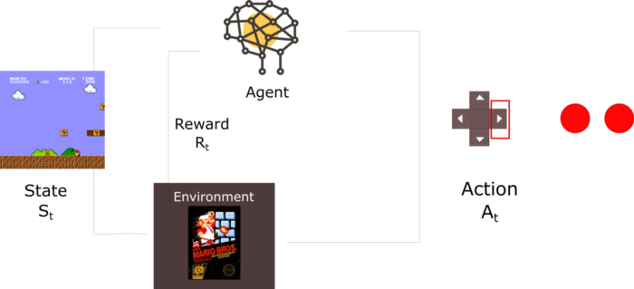
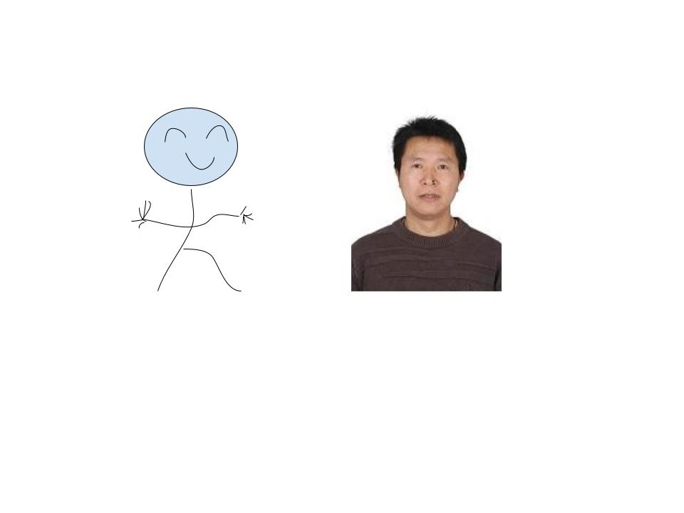
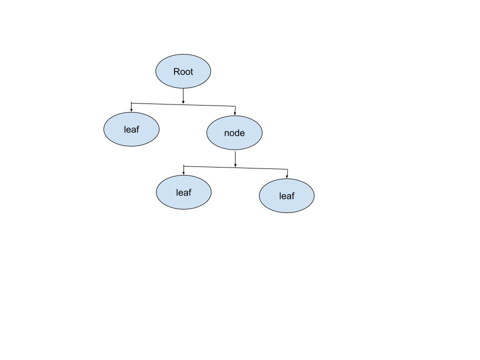
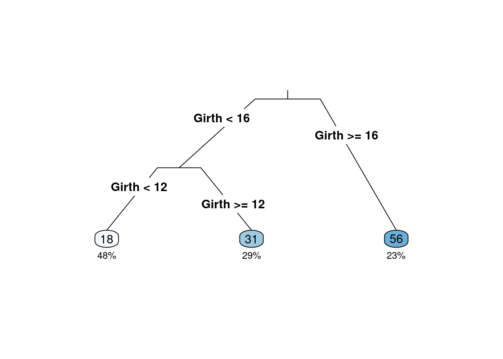

5 有监督学习概论
5.0.1 机器学习
- 机器学习1959年由Arthur Samuel首次提出；
- 机器学习是研究计算机算法，这个算法可通过数据产生的经验自动地改善（Machine learning (ML) is the study of computer algorithms that can improve automatically through experience and by the use of data）（Mitchell,Tom，1959）
- 机器学习是计算机程序，如果该程序在T类任务中的表现，如P所衡量的，随着经验E的增加而提高，那么就可以说它从经验E中学习到了一些任务T和性能指标P。（A computer program is said to learn from experience E with respect to some class of tasks T and performance measure P if its performance at tasks in T, as measured by P, improves with experience E.）（Tom M. Mitchell ）
- 一系列的数据驱动的算法和工具，它的主要目的是根据观测到的数据来预测没有观测到的数据，它的最大特点就是数据驱动。
- 机器学习的种类:

machine learning
5.0.2 机器学习实例
房价预测：如何对房子的价格进行预测？采集与房子有关的变量：区域、房子朝向、楼层、周围是否有地铁、面积、房屋的价格等数据，构建一个回归模型来进行预测。\[y=f(X)+\epsilon\]
垃圾邮件分类：根据邮件内容提取出一些特征关键词作为X，而响应变量y为两个是值：1垃圾邮件，0好邮件，构建一个分类器进行邮件分类。\[C(x)=P(y=1|X)\]
我们做过的舆情分析案例（聚类分析）：使用评论数据，通过词向量技术解析得到词向量，然后进行主题分析，得到网络谣言、疫情趋势、地点（国外）、处罚、疫苗等主题，从而根据这些主题词来识别谣言。
强化学习:玩Super Mario Bros游戏

ReinforcementLearning
5.1 模型及拟合
- 模型：人们对所关心的真实世界问题的一个近似描述。

Model
-
决策树模型：是一种有监督学习的算法，使用一系列的是和否规则（if-then rules)来进行决策，和人进行决策的过程类似。 
- 数据：
# install.packages{"rpart"}
# install.packages{"rattle"}
# install.packages{"partykit"}
library(rpart)
library(rpart.plot)
library(rattle)## Loading required package: tibble## Loading required package: bitops## Rattle: A free graphical interface for data science with R.
## Version 5.5.1 Copyright (c) 2006-2021 Togaware Pty Ltd.
## Type 'rattle()' to shake, rattle, and roll your data.## Loading required package: grid## Loading required package: libcoin## Loading required package: mvtnorm## Girth Height Volume
## 1 8.3 70 10.3
## 2 8.6 65 10.3
## 3 8.8 63 10.2
## 4 10.5 72 16.4
## 5 10.7 81 18.8
## 6 10.8 83 19.7
volume <- rpart(Volume ~ ., data = trees)
rpart.plot(volume, type = 3, clip.right.labs = FALSE, branch = .3, under = TRUE)
df <- read.csv("./data/simple4.csv")
df## sex haircol skirt style
## 1 F yellow y n
## 2 F black y n
## 3 F yellow n y
## 4 F black n y
## 5 M yellow n n
## 6 M black n n
## 7 M yellow y n
## 8 F black n y
## 9 M yellow n n
## 10 F black y n
## 11 M black y y
## 12 F yellow n y
#sex <- factor(df$sex, levels = 0:1, labels = c("M", "F"))
#haircol <- factor(df$haircol,levels = 0:1, labels = c("yellow", "black"))
#skirt <- factor(df$skirt,levels = 0:1, labels = c("y", "n"))
#style <- factor(df$style,levels = 0:1, labels = c("y", "n"))
#df[] <- lapply(df,factor)
#str(df)
#output.tree<- rpart(sex~.,data=df,cp=0.02)
#print(output.tree)
#rpart.plot(output.tree)- 节点纯度的度量：Gini系数和熵 \[GiniIndex=1-\sum\limits_{i=1}^kp_i^2\] \[Entropy=-\sum\limits_{i=1}^kp_i\times log(p_i)\]